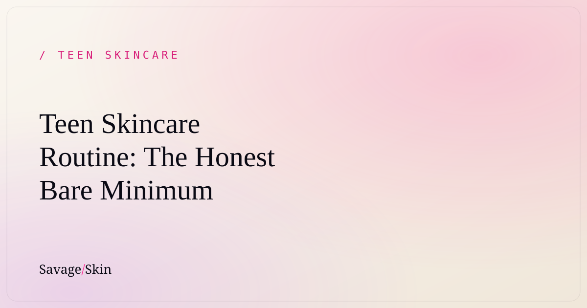

Teen Skincare Routine: The Honest Bare Minimum

Real talk: you don't need 12 steps, a $300 haul, or whatever the algorithm sold you at 1am. A genuinely good teen skincare routine is four steps, twice a day, done consistently. That's it. Cleanse, moisturize, sunscreen in the morning, and treat only if you actually have something to treat. Everything past that is optional, and a lot of it is actively making your skin worse. Here's the no-BS version.
Why less is more for teen skin
Your skin in your teens is doing a LOT on its own — hormones are ramping up oil production, your skin barrier is still figuring itself out, and your skin cell turnover is already fast (faster than it'll be at 30, btw). Piling on a bunch of strong products doesn't speed up "good skin." It usually just irritates your barrier, which leads to redness, more breakouts, and that tight/stingy feeling. The internet loves to overcomplicate this because complicated = more product = more money. Don't fall for it.
The goal of a teen routine isn't to fix everything overnight. It's to keep your barrier healthy and protected so your skin can do its thing. Boring? Kind of. Effective? Extremely.
The 4-step routine that actually works
1. Cleanser (AM + PM)
Wash your face morning and night with a gentle, non-stripping cleanser. If your skin feels squeaky-tight after washing, that cleanser is too harsh — that tight feeling is a red flag, not "clean." Look for something fragrance-free and gentle, like our Clean Start Cleanser, which is built to clear oil and gunk without nuking your barrier.
Pro tip: at night, wash after sweating from sports or wearing makeup. In the morning, a quick rinse is enough.
2. Moisturizer (AM + PM)
Yes, even if your skin is oily. Skipping moisturizer when you're oily backfires — your skin panics and produces more oil to compensate. A lightweight moisturizer keeps your barrier happy. Gel or lotion textures are great for oily/combo skin; richer creams for dry skin. Our Dew Guard Moisturizer uses squalane (a lightweight hydrator your skin already recognizes) so it won't feel greasy.
3. Sunscreen (AM, every single day)
This is the most important anti-aging, anti-dark-spot, anti-everything product you will ever own, and almost no teen uses it consistently. UV damage is the #1 thing that ages skin and makes acne marks stick around longer. Use SPF 30+ every morning, even when it's cloudy, even when you're inside near windows. If you do ONE thing from this whole post, make it this.
(Heads up: Savage Skin's SPF is in the works — until it drops, grab any broad-spectrum SPF 30+ that feels good on your skin so you actually wear it.)
4. Treat — only if you need to
This is the step everyone wants to start with and it should honestly be last. If you have active breakouts, a simple spot treatment or pimple patch is plenty. You do not need retinol, glycolic acid, or a vitamin C serum at 13. We get into exactly when actives make sense in our honest guide to actives for teens — read that before you buy anything "anti-aging."
A sample day
Morning: Cleanser → Moisturizer → Sunscreen Night: Cleanser → (optional spot treatment) → Moisturizer
Four products. Five minutes. That's a complete, derm-approved routine.
The mistakes that wreck teen skin
- Over-washing / over-exfoliating. Scrubbing 3x a day or using a harsh exfoliant daily destroys your barrier. Once you're irritated, everything breaks out more.
- Starting actives too early or too many at once. More on this below.
- Skipping sunscreen. We said it twice on purpose.
- Switching products every week because TikTok told you to. Give a product 4–6 weeks before deciding.
- Picking at your skin. That's how a one-day pimple becomes a one-year dark spot.
When to actually see a dermatologist
If you've got painful cystic acne, acne that's affecting your confidence, or nothing's working after a couple months of a consistent routine — see a dermatologist. Prescription options exist and they're genuinely life-changing for some people. There's zero shame in it.
Frequently asked questions
What age should you start a skincare routine?
Around puberty (11–13), a simple cleanse + moisturize + sunscreen routine is perfect. You don't need anything fancy.
Do teens really need moisturizer if they have oily skin?
Yes. Oily skin is often dehydrated skin overproducing oil. A lightweight moisturizer actually helps balance oil over time.
Is a 10-step Korean skincare routine good for teens?
Not necessary, and often counterproductive. Teen skin does best with a simple, gentle routine. Save the multi-step stuff for when you have specific concerns.
Can I use my mom's anti-aging products?
Probably skip them. Anti-aging products often contain strong retinoids and acids your skin doesn't need yet and may not tolerate. Build your own simple routine instead.